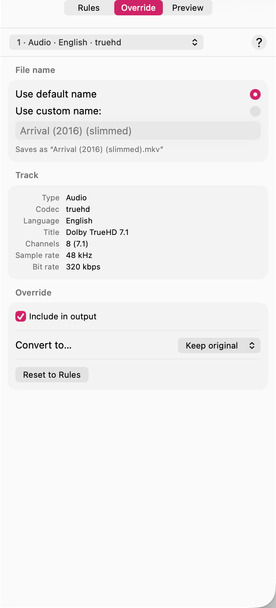

Les règles de conservation s’appliquent à toute la file d’attente. Quand un fichier demande un traitement différent – une piste mal étiquetée, un documentaire dont vous voulez justement le commentaire –, vous pouvez traiter ce fichier à part.

Le menu des pistes répertorie toutes les pistes du fichier. Les éléments grisés sont les pistes qui seront retirées ; les autres seront conservées. Choisissez une piste pour voir ce qui lui arrivera et pourquoi.
Pour lire tout le fichier d’un coup plutôt que piste par piste, consultez Lire le plan complet d’un fichier. C’est le moyen le plus rapide de vérifier que vos règles font bien ce que vous voulez avant de leur confier toute une file d’attente.
Choisissez une piste, puis décidez de son sort : la conserver, la retirer ou la convertir en un codec donné.
À savoir avant de le faire. Modifier une seule piste fait passer tout le fichier à un plan qui lui est propre. Toutes les autres pistes sont figées telles que les règles les traitaient à cet instant, et ce fichier cesse dès lors de suivre les règles de la file d’attente. Si vous modifiez les règles ensuite, ce fichier n’en tiendra pas compte.
C’est généralement ce que vous voulez, puisque vous avez choisi ce fichier à dessein ; mais une personnalisation définie tôt puis oubliée ignorera discrètement les changements de règles ultérieurs.
Cliquez sur Revenir aux règles. Le fichier abandonne son propre plan et suit de nouveau les règles de la file d’attente, y compris tout ce que vous avez modifié depuis. Le bouton n’apparaît que si le fichier est effectivement personnalisé ; sa présence indique donc aussi si une personnalisation est définie.
Le même onglet permet de définir un nom de sortie pour ce fichier seul, à la place du format de nommage de la file d’attente. Pour en savoir plus, consultez Nommer les fichiers écrits par SubTrack.
Si vous réanalysez un fichier (File d’attente ▸ Réanalyser la sélection), ses pistes sont relues depuis le disque. Une personnalisation qui concernait une piste disparue ne peut pas être appliquée ; vérifiez donc le plan après avoir remplacé un fichier source.